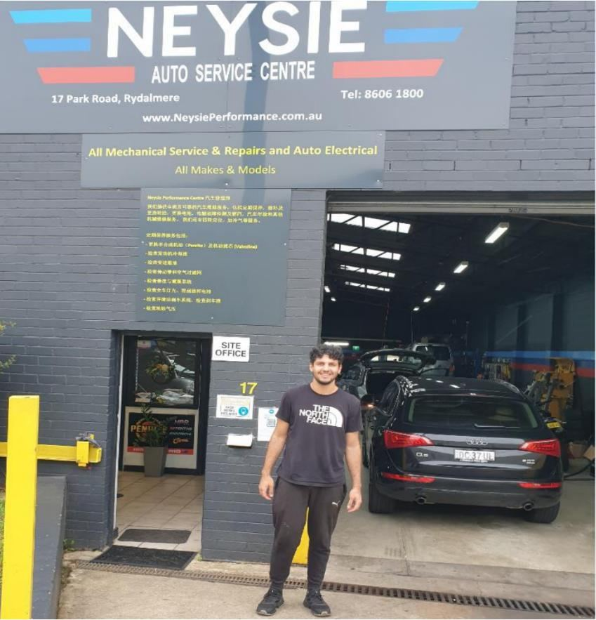
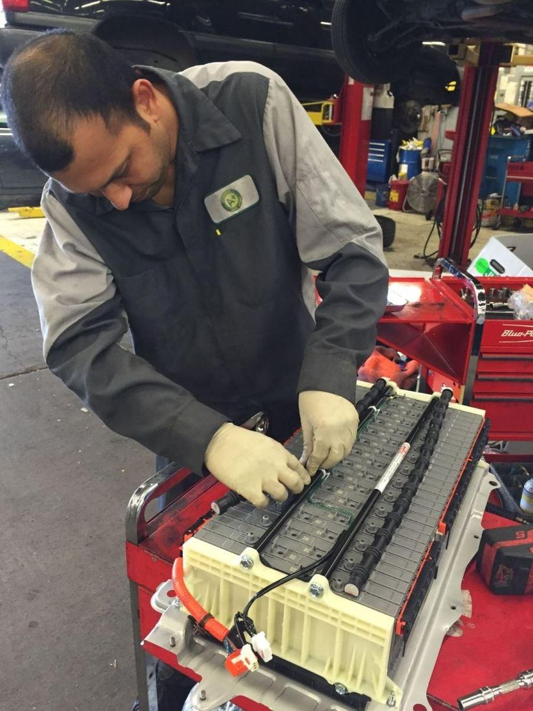
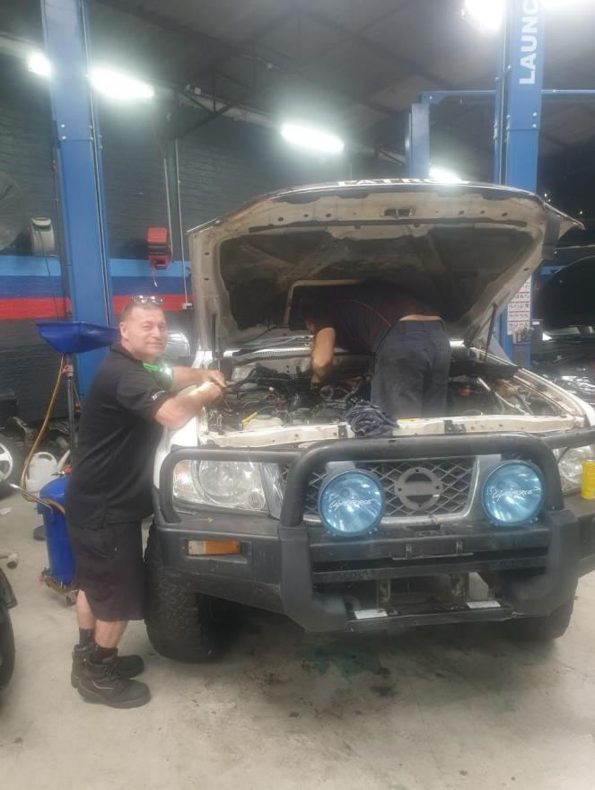
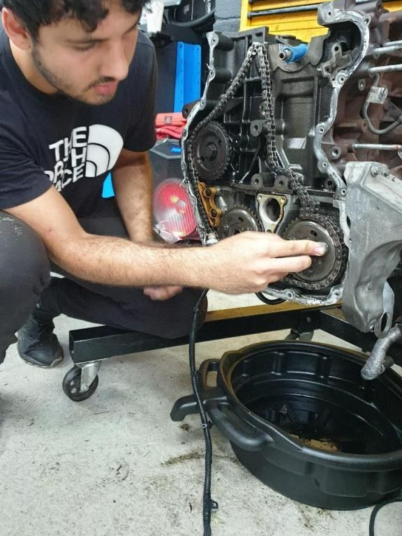
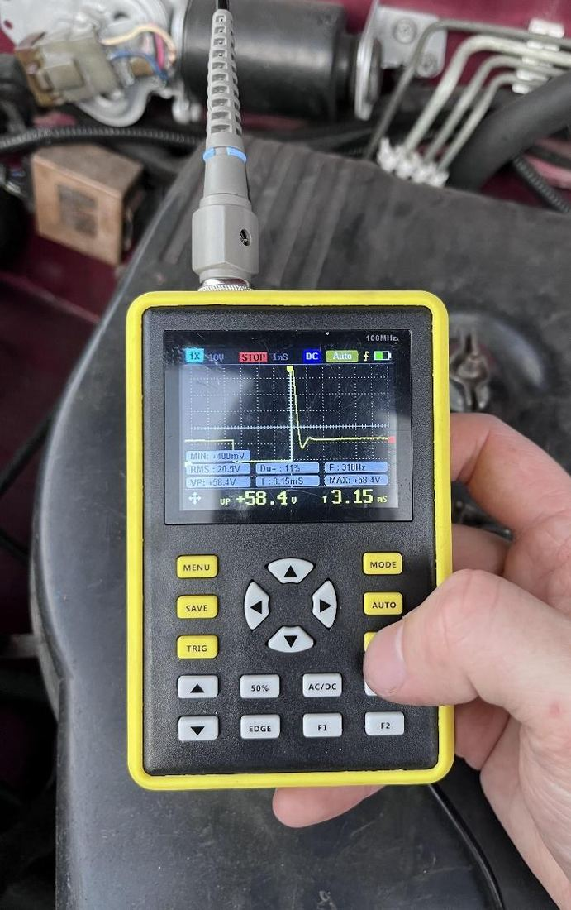

University of Technology Sydney — Mechanical & Mechatronic Engineering
Automotive Diagnostics | Electrical Systems | EV Field Engineering
Final-year engineering graduate building toward EV and hybrid field engineering — working across automotive diagnostics, electrical compliance, and safety-critical hardware.
I'm a final-year Mechanical and Mechatronic Engineering student at UTS, completing a Diploma in Professional Engineering Practice alongside my degree. My focus is electric and hybrid vehicle field engineering — a direction built from concurrent study and industry work, not classroom theory alone.
Through 2025 I worked inside Neysie Performance's diagnostics workshop, diagnosing CAN bus faults, programming ECUs, and calibrating ADAS systems on hybrid and high-voltage vehicles. I'm now continuing that safety-critical discipline as an Electronic Monitoring Technician at Buddi, configuring dual-SIM GPS devices for tracking and alert generation, while completing TAFE electrical trade units in AS/NZS 3000 compliance alongside my degree. Outside of work I apply the same standard to my own vehicles — most recently wiring a dual-battery power system and driving-light circuit on my Nissan Patrol.
Seeking a graduate field engineering role in the electric and hybrid vehicle sector, applying formal mechanical and mechatronic training to high-voltage diagnostic, calibration, and commissioning work — and offering an engineering organisation a graduate who moves fluidly between design-stage analysis and safety-critical, in-field execution from day one.
One page · tailored for graduate field engineering applications
Designed a pick-and-place robot workcell for an automated dish-washing scullery on a UR3e, as part of a 3-person team, from scenario definition through to a shared GitHub repository.
Co-authored a group report on a 500 kV AC transmission line from Kemps Creek to Sydenham, covering three-phase system behaviour, transformer impedance testing, and R-L-C circuit analysis.
Designed, built, and documented a MOSFET-based boost converter that steps a low-voltage supply up to 40V for higher-voltage subsystems, including circuit schematics and switching-timing analysis.
Designed a portable, solar-powered BBQ system end-to-end using the ADAP³D design methodology.
Implemented a ROS2/Python particle-filter localisation system that lets a simulated Mars rover estimate its own position without GPS.
Contributed PESTEL and stakeholder analysis on Aboriginal water entitlements in the Murray-Darling Basin, presented with APA7-referenced research.
Configure and program dual-SIM GPS monitoring devices for accurate location tracking and correct alert generation, including exclusion-zone breaches and tamper detection, in a zero-tolerance safety environment.
Diagnosed CAN bus faults, programmed ECUs, and calibrated ADAS systems on live customer vehicles, including hybrid and high-voltage powertrains. Led diagnostic project work and supported technician mentoring, tracked against Engineers Australia Stage 2 competency elements.
Managed rostering, stock control, and staff training while studying full-time.
Serviced vehicles and built foundational knowledge of automotive components and diagnostic tools.





I'm building toward Engineers Australia's Stage 2 standard across all four of its units: pursuing electrical trade units and short courses beyond my core degree (Personal Commitment), contributing to community-facing research like the water rights project (Obligation to Community), taking on safety-critical work at Neysie and Buddi (Value in the Workplace), and accumulating a project portfolio spanning robotics, power systems, and design (Technical Proficiency). Longer term, I'm working toward Engineers Australia membership and Chartered status via the Stage 2 pathway.